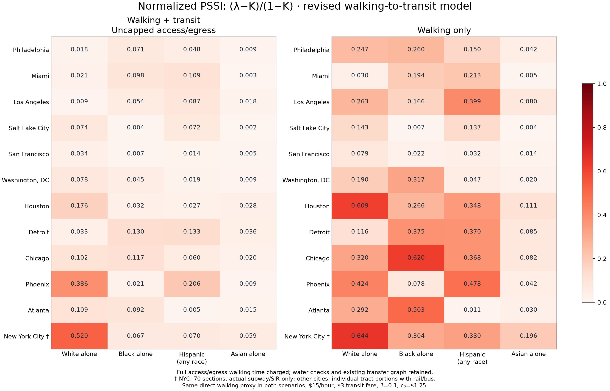
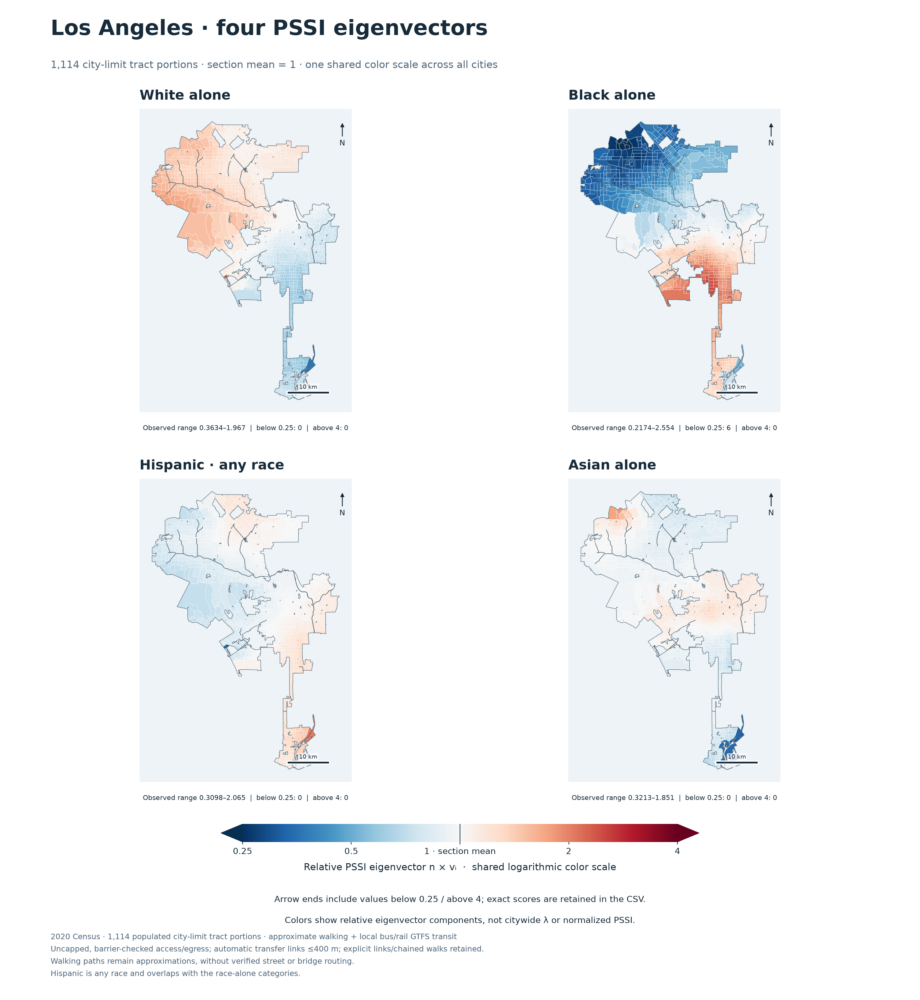
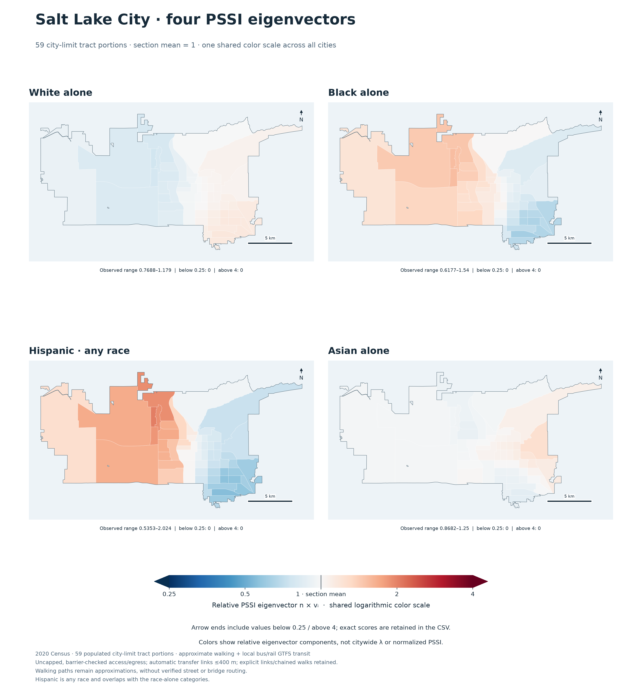
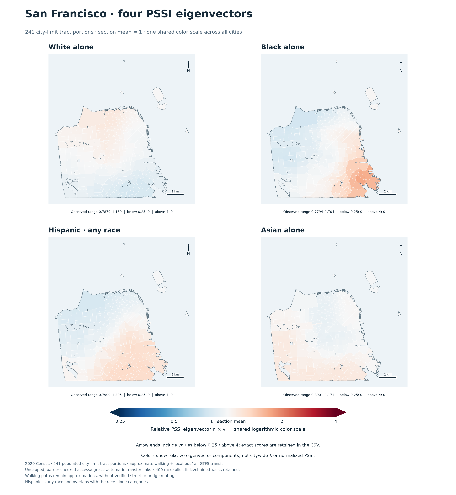
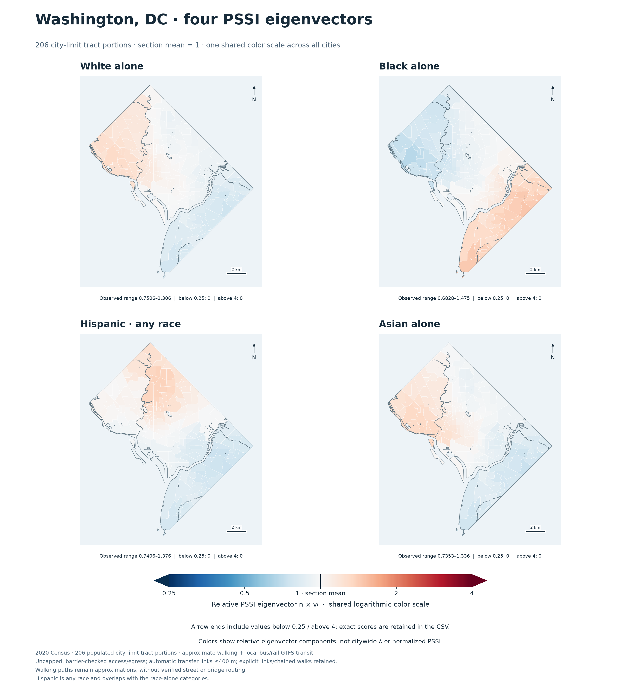
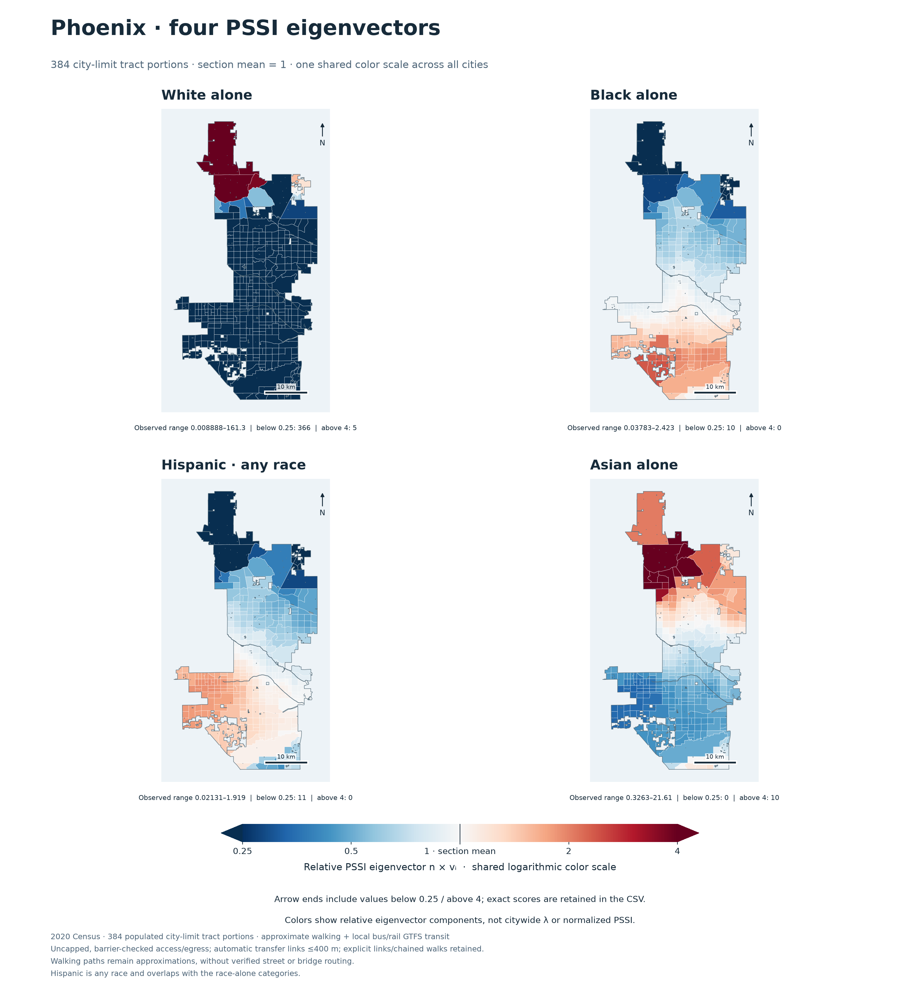
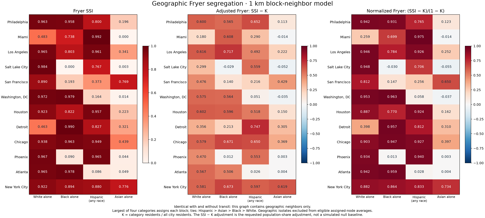

New York City

2020 Census · 12 US cities · four racial/ethnic categories · reproducible local calculations

Normalized PSSI = (lambda − K)/(1 − K), where K is the category fraction of all city residents. See raw PSSI, geographic Fryer scores, parameters and every table column.
Maps show the relative right-eigenvector score n × v, with node mean 1. The common logarithmic color scale spans 0.25–4, with outside-range values flagged and retained in the data.











The 1 km block-neighbor Fryer graph is independent of transit. Its raw SSI, requested population-share adjustment SSI − K, and normalization are shown. Method, tract companion and distance sensitivity.